openai/gpt-4.1-mini
mean reward 0.816 · compile rate 91% · 120 valid rollouts. Blue = reference; green ≥ 0.9, orange ≥ 0.4, red below. Hover a tile for the generated OpenSCAD.
L1 · example 0 · mean 1.00 · max 1.00
A solid rectangular box 15mm wide, 15mm deep, and 35mm tall.

L2 · example 1 · mean 0.35 · max 1.00
A solid hexagonal prism 35mm tall, 60mm across the flats, with two flats parallel to the x axis, with a 12mm-radius hole drilled vertically through the center of the entire part. The part sits on the z=0 plane, centered on the Z axis.

 {
// Calculate the radius of the circumscribed circle (corner to center)
r = across_flats / sqrt(3);
// Create a regular hexagon with two flats parallel to the x axis by default
linear_extrude(height)
polygon(points = [
[r, 0],
[r/2, (r*sqrt(3))/2],
[-r/2, (r*sqrt(3))/2],
[-r, 0],
[-r/2, -(r*sqrt(3))/2],
[r/2, -(r*sqrt(3))/2]
]);
}
difference() {
hex_prism(35, 60);
translate([0, 0, 0])
cylinder(h=35, r=12, center=false, $fn=64);
}")
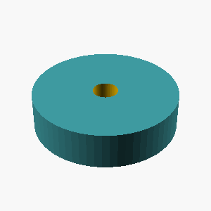
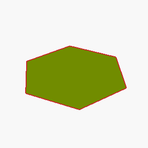
L5 · example 2 · mean 1.00 · max 1.00
Create a triangular prism standing 45mm tall: its base is a right triangle with legs of 20mm (along X) and 30mm (along Y) meeting at the origin.


polygon(points=[[0,0],[20,0],[0,30]]);")
L4 · example 3 · mean 0.39 · max 0.81
A solid hexagonal prism 50mm tall, 40mm across the flats, with two flats parallel to the x axis, with a 3mm-radius hole drilled vertically through the center of the entire part; and a cone of base radius 12mm and height 20mm standing centered on its top face, apex up. The part sits on the z=0 plane, centered on the Z axis.

;
// Heights
hex_height = 50;
cone_height = 20;
cone_base_radius = 12;
hole_radius = 3;
module hex_prism() {
// Hexagon with two flats parallel to x-axis
linear_extrude(height=hex_height)
polygon(points=[
[ hex_side, 0],
[ hex_side/2, hex_flat/2],
[-hex_side/2, hex_flat/2],
[-hex_side, 0],
[-hex_side/2, -hex_flat/2],
[ hex_side/2, -hex_flat/2]
]);
}
module cone_apex_up() {
// Cone apex up, base centered at origin on XY plane
translate([0,0,hex_height])
cylinder(h=cone_height, r1=cone_base_radius, r2=0);
}
difference() {
hex_prism();
// Hole drilled vertic")
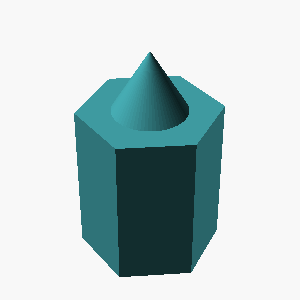
 {
// flat_to_flat: distance across flats
// side length of hexagon s = flat_to_flat / cos(30°)
s = flat_to_flat / cos(30);
// create hexagon centered at origin with two flats parallel to x-axis
polygon(points = [for(i = [0:5])
[s*cos(60*i + 30), s*sin(60*i + 30)]]);
linear_extrude(height);
}
difference() {
// Hexagonal prism
hex_prism(40, 50);
// Vertical hole
translate([0, 0, -1])
cylinder(h=52, r=3, center=false);
}
translate([0,0,50]) {
// Cone on top face apex up
cone_r = 12;
cone_h = 20;
cylinder(h=cone_h, r1=cone_r, r2=0, center=false);
}")
L1 · example 4 · mean 1.00 · max 1.00
A solid cylinder 25mm tall with a radius of 20mm, standing upright.

L5 · example 5 · mean 0.95 · max 1.00
Create a triangular prism standing 25mm tall: its base is a right triangle with legs of 45mm (along X) and 30mm (along Y) meeting at the origin.


polygon(points=[[0,0],[45,0],[0,30]]);")

polygon(points=[[0,0],[45,0],[0,30]]);")
;")
;")
L3 · example 6 · mean 0.94 · max 1.00
A solid hexagonal prism 25mm tall, 50mm across the flats, with two flats parallel to the x axis, with 4 holes of radius 2mm drilled vertically through it, evenly spaced on a circle of radius 18.1mm around the center, the first hole on the +X axis; and a 8mm-radius hole drilled vertically through the center of the entire part. The part sits on the z=0 plane, centered on the Z axis.

.
// For a regular hexagon, distance across flats = 2 * apothem
// apothem = (side) * cos(π/6) = side * (√3/2)
// and circumradius = side
// Given distance across flats = 50 = 2 * apothem
// apothem = 25
// apothem = side * (√3/2)
// side = apothem / (√3/2) = 25 / (√3/2) = 25 * 2 / √3 = 50 / 1.73205 ≈ 28.8675
// circumradius = side = 28.8675 mm
height = 25; // height of the prism
across_flats = 50; // given
apothem = across_flats / 2; // 25 mm
side = apothem / (cos(60/180*PI)); // cos(π/6) = cos(30°) = √3/2
// Correction: cos(π/6) = cos(30°) = 0.8660254
side = apothem / 0.8660254; // correct side length
// side ≈ 28.8675
circumradius = side; // circumradius
// circu")
 {
// side length from flat-to-flat distance: side = flat_to_flat / sqrt(3)
side = flat_to_flat / sqrt(3);
// rotate to orient the hexagon with two flats parallel to x axis
rotate(0)
linear_extrude(height)
polygon(points = [
[side, 0],
[side/2, side*sqrt(3)/2],
[-side/2, side*sqrt(3)/2],
[-side, 0],
[-side/2, -side*sqrt(3)/2],
[side/2, -side*sqrt(3)/2]
]);
}
height = 25;
flat_to_flat = 50;
difference() {
// hex prism
hex_prism(flat_to_flat, height);
// center hole radius 8 mm
translate([0,0,0])
cylinder(h=height+2, r=8, center=false);
// 4 holes radius 2mm, on circle")
 {
// Calculate radius of the circumscribed circle for the hex based on across flats
r = across_flats / (sqrt(3));
cylinder(h = height, r = r, center = false, $fn = 6);
}
height = 25;
across_flats = 50;
hole_r = 2;
num_holes = 4;
circle_r = 18.1;
center_hole_r = 8;
difference() {
hex_prism(across_flats, height);
// Center hole
translate([0, 0, 0]) cylinder(h = height + 1, r = center_hole_r, center = false, $fn = 64);
// Four holes on circle
for (i = [0 : 360 / num_holes : 360-360/num_holes]) {
x = circle_r * cos(i);
y = circle_r * sin(i);
translate([x, y, 0]) cylinder(h = height + 1, r = hole_r, center = false, $fn = 64);
}
}")
 {
radius = flat_to_flat / 2 / cos(30);
rotate(90) // rotate so two flats are parallel to x axis
cylinder(h=height, r=radius, center=false);
}
difference() {
// Hexagonal prism
hex_prism(50, 25);
// Center hole radius 8 mm
translate([0,0,0])
cylinder(h=26, r=8, center=false);
// Four holes, radius 2 mm, evenly spaced on a circle of radius 18.1 mm,
// first hole at +X axis (angle 0), holes at 0, 90, 180, 270 degrees
for(angle = [0, 90, 180, 270]) {
translate([18.1*cos(angle), 18.1*sin(angle), 0])
cylinder(h=26, r=2, center=false);
}
}")
L4 · example 7 · mean 0.10 · max 0.41
A solid hexagonal prism 50mm tall, 35mm across the flats, with two flats parallel to the x axis, with hollowed out from the top into an open container with 5mm thick walls and floor. The part sits on the z=0 plane, centered on the Z axis.


r_outer = outer_af / cos(30);
// Inner hex radius for hollow (subtract wall thickness)
r_inner = r_outer - wall_thickness / cos(30);
module hex_prism(r, height) {
linear_extrude(height)
polygon(points = [ for(i=[0:5]) [r*cos(60*i + 30), r*sin(60*i + 30)] ]);
}
difference() {
// Outer solid hexagonal prism sitting on z=0
translate([0,0,0])
hex_prism(r_outer, h);
// Inner hex hollow volume (offset up by wall thickness, open top)
translate([0,0,wall_thickness])
hex_prism(r_inner, h - wall_thickness);
}")
 {
// Hexagon with two flats parallel to x-axis
// Given across_flats = distance between two opposite flats
// Radius (distance from center to vertex) = across_flats / cos(30°)
r = across_flats / cos(30);
// Create hexagon polygon points with two flats parallel to x-axis
points = [];
for (i = [0:5]) {
angle_deg = 60 * i;
angle_rad = angle_deg * 3.14159265359 / 180;
x = r * cos(angle_rad);
y = r * sin(angle_rad);
points = concat(points, [[x, y]]);
}
linear_extrude(height)
polygon(points);
}
height = 50;
across_flats = 35;
wall_thickness = 5;
difference() {
// Outer hex prism
hex_prism(height, across_flats);
// Inner hollowed hex prism with walls")
L5 · example 8 · mean 1.00 · max 1.00
Create a 35mm-tall prism shaped like a plus sign, formed by two perpendicular 60mm x 20mm bars crossing at their midpoints.

 {
// Horizontal bar
cube([60,20,35], center=true);
// Vertical bar
cube([20,60,35], center=true);
}")
 {
cube([60,20,35], center=true);
cube([20,60,35], center=true);
}")
L2 · example 9 · mean 1.00 · max 1.00
An open-top rectangular container with outer dimensions 55mm x 70mm x 55mm, wall and floor thickness 5mm.

 {
cube([55,70,55]);
translate([5,5,5]) cube([55-10,70-10,55-5]);
}")
 {
// Outer container
cube([55,70,55], center=false);
// Inner hollow space
translate([5,5,5]) cube([55-2*5, 70-2*5, 55-5], center=false);
}")
 {
// Outer box
cube([55, 70, 55]);
// Inner hollow
translate([5, 5, 5])
cube([55-2*5, 70-2*5, 55-5]);
}")
 {
// Outer container
cube([55,70,55]);
// Inner hollow space
translate([5,5,5])
cube([55 - 2*5, 70 - 2*5, 55 - 5]);
}")
L3 · example 10 · mean 1.00 · max 1.00
A stepped circular shaft standing upright, made of 2 stacked coaxial cylinders from bottom to top: a section of radius 35mm and height 25mm, then a section of radius 20mm and height 20mm. Each section is narrower than the one below it.

;
translate([0,0,25])
cylinder(h=20, r=20);")
 {
cylinder(h=25, r=35);
translate([0,0,25]) cylinder(h=20, r=20);
}")
 {
cylinder(h=25, r=35);
translate([0,0,25]) cylinder(h=20, r=20);
}")
L5 · example 11 · mean 0.91 · max 1.00
A flat rectangular plate 90mm x 50mm and 11mm thick, with a rounded slot cut all the way through its center: the slot is 64mm long along the X direction and 12mm wide, with semicircular ends.

 {
// Base plate
cube([90, 50, 11], center=false);
// Rounded slot in center
translate([ (90 - 64)/2, (50 - 12)/2, 0 ])
rounded_slot(64, 12, 11);
}
module rounded_slot(length, width, height) {
// The slot is a rectangle length-(width) with semicircular ends along X
hull() {
translate([width/2, width/2, 0])
cylinder(h=height, r=width/2, center=false);
translate([length - width/2, width/2, 0])
cylinder(h=height, r=width/2, center=false);
}
}")
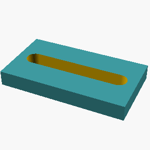
 {
// Plate
cube([90, 50, 11], center=false);
// Rounded slot
translate([ (90-64)/2, (50-12)/2, -1 ]) // centered slot, extend below to ensure through cut
hull() {
// semicircle at left end
translate([0, 6, 0]) cylinder(h=13, r=6, center=true);
// semicircle at right end
translate([64, 6, 0]) cylinder(h=13, r=6, center=true);
}
}")
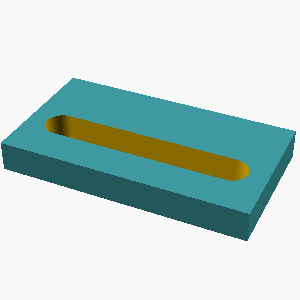
L1 · example 12 · mean 1.00 · max 1.00
A solid rectangular box 10mm wide, 55mm deep, and 60mm tall.

;")
L2 · example 13 · mean 0.84 · max 1.00
A solid box 45mm x 25mm x 60mm with a rectangular notch 10mm wide and 13mm deep cut into the middle of its top face, running through the full depth of the box.

 {
cube([45,25,60]);
translate([(45-10)/2, 0, 60-13])
cube([10,25,13]);
}")
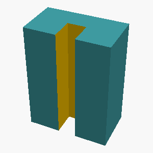
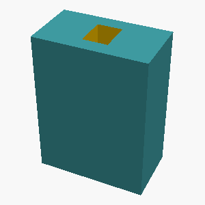
 {
// Solid box
cube([45, 25, 60]);
// Rectangular notch centered on top face, full depth
translate([ (45 - 10)/2, (25 - 13)/2, 0 ])
cube([10, 13, 60]);
}")
L5 · example 14 · mean 1.00 · max 1.00
A vertical prism 45mm tall whose footprint is a right triangle with one leg 35mm along the X axis and the other leg 20mm along the Y axis, right angle at the origin.


polygon(points=[[0,0],[35,0],[0,20]]);")
L4 · example 15 · mean 1.00 · max 1.00
A hexagonal prism (like a nut) 18mm tall, measuring 30mm across the flats, with a circular hole of radius 5mm drilled through its center along the axis.

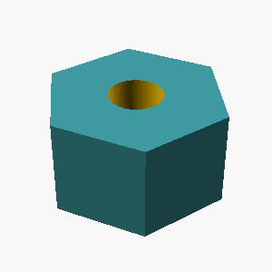
 {
// Hexagon radius (distance from center to a vertex)
r = 30 / cos(30); // since across flats = 2 * r * cos(30), solve for r
// Across flats = 2 * r * cos(30°)
// r = 30 / (2 * cos(30°)) = 30 / (2 * 0.86602540378) = 17.3205 is wrong
// Wait: across flats = 2 * r * cos(30)
// So r = across flats / (2 * cos(30))
// We can calculate properly:
// cos(30°) = sqrt(3)/2 ≈ 0.86602540378
r = 30 / (2 * 0.86602540378);
prism_height = 18;
difference() {
// hex prism
linear_extrude(height = prism_height)
polygon(points = [ for (i = [0:5]) [r * cos(60*i), r * sin(60*i)] ]);
// hole through center
translate([0, 0, -1]) cylinder(h = prism_height + 2, r = 5);
}
}
hex_nut();")
 {
// Calculate radius of circumscribed circle for hexagon
r = across_flats / sqrt(3);
difference() {
// Hexagonal prism
cylinder(h = height, r = r, center = false, $fn = 6);
// Hole through center
translate([0, 0, -1]) cylinder(h = height + 2, r = hole_radius, center = false);
}
}
hex_nut(30, 18, 5);")
 {
// Calculations:
// Across flats = 30 mm
// For a regular hexagon, across flats = 2 * apothem
// apothem = 15 mm
// apothem = side * cos(30°) => side = apothem / cos(30°)
// cos(30°) = sqrt(3)/2 ≈ 0.86602540378
// side = 15 / 0.86602540378 ≈ 17.32 mm
// Create hexagonal prism
difference() {
// Hexagonal prism with 18mm height
cylinder(h=18, r=17.32, $fn=6);
// Through hole with radius 5mm
translate([0,0,-1]) cylinder(h=20, r=5);
}
}
hex_prism_with_hole();")
L1 · example 16 · mean 1.00 · max 1.00
A solid cylinder 60mm tall with a radius of 5mm, standing upright.

L5 · example 17 · mean 0.46 · max 1.00
A solid torus (donut shape) lying flat on the table: the ring's centerline circle has a radius of 15mm and the circular tube cross-section has a radius of 5mm.

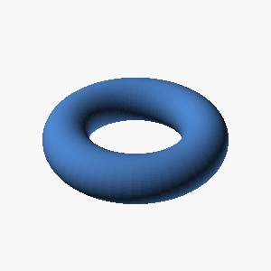

rotate([90,0,0])
torus(r1=15, r2=5);
module torus(r1, r2) {
// Create a torus by rotating a circle of radius r2 around the z-axis at radius r1
rotate_extrude(angle=360)
translate([r1, 0, 0])
circle(r2);
}")
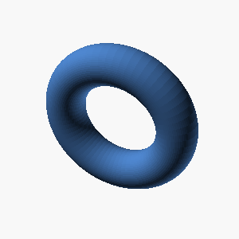
L3 · example 18 · mean 0.85 · max 0.98
A solid box 55mm wide (x), 50mm deep (y), and 25mm tall, with 3 holes of radius 2mm drilled vertically through it, evenly spaced on a circle of radius 18.1mm around the center, the first hole on the +X axis; and a horizontal hole of radius 3mm drilled along the X axis through the whole part at half its height, centered in Y. The part sits on the z=0 plane, centered on the Z axis.

 {
// Solid box centered on XY, from z=0 to z=25
translate([-55/2, -50/2, 0])
cube([55, 50, 25]);
// Vertical holes: 3 holes of r=2mm, spaced evenly on a circle radius=18.1mm,
// first hole on +X axis, through entire height of 25mm from z=0
for(i = [0 : 2]) {
angle = i * 360/3;
x = 18.1 * cos(angle);
y = 18.1 * sin(angle);
translate([x, y, 0]) cylinder(h=25, r=2, $fn=64);
}
// Horizontal hole: radius=3mm along X axis, through whole part at half height z=12.5,
// centered in Y (y=0), from x=-27.5 to x=27.5 (width=55)
translate([0, 0, 12.5])
rotate([0, 90, 0])
cylinder(h=55, r=3, center=true, $fn=64);
}")
 {
translate([0,0,12.5])
cube([55,50,25], center=true);
// three vertical holes, radius 2mm, evenly spaced on a circle radius 18.1mm, first hole on +X axis
for (i = [0:2]) {
angle = i*120; // degrees
x = 18.1 * cos(angle);
y = 18.1 * sin(angle);
translate([x,y,0])
cylinder(h=30, r=2, center=false); // hole drilled through whole part
}
// horizontal hole, radius 3mm, along X axis, through whole part at half height, centered in Y
translate([0, 25/2, 12.5])
rotate([0,90,0])
cylinder(h=55, r=3, center=true);
}")
 {
// Solid box centered on XY with z=0 at bottom
translate([-55/2, -50/2, 0])
cube([55, 50, 25]);
// Vertical holes: 3 holes on circle radius 18.1mm, first on +X axis
for (i = [0:2]) {
angle = i * 120;
x = 18.1 * cos(angle);
y = 18.1 * sin(angle);
translate([x, y, 0])
cylinder(h=25, r=2, center=false);
}
// Horizontal hole along X axis, radius 3, through whole part at half height, centered in Y and Z=0 at bottom
translate([-55/2, 50/2, 12.5])
rotate([0, 90, 0])
cylinder(h=50, r=3, center=true);
}")
 {
// Box centered at Z=0 plane
translate([0,0,12.5])
cube([55,50,25], center=true);
// Vertical holes (3 holes, radius 2mm) evenly spaced on circle radius 18.1mm
for(i=[0:2]) {
angle = i * 120;
x = 18.1 * cos(angle);
y = 18.1 * sin(angle);
translate([x,y,0])
cylinder(h=25+2, r=2, center=false);
}
// Horizontal hole (radius 3mm) along X axis through the whole box at half height, centered in Y
translate([0, 25/2, 12.5])
rotate([0,90,0])
cylinder(h=55+2, r=3, center=true);
}
difference(){
box_with_holes();
}")
L4 · example 19 · mean 0.81 · max 0.86
A gear-like disc 6mm thick with radius 25mm, with 6 rectangular teeth evenly spaced around its rim. Each tooth is 5mm wide and extends 6mm radially outward from the rim, spanning the full thickness of the disc.

 {
// Base disc
cylinder(h=thickness, r=radius);
// Teeth
union() {
for(i = [0:num_teeth-1]) {
rotate([0,0,i*360/num_teeth])
translate([radius, -tooth_width/2, 0])
cube([tooth_height, tooth_width, thickness], center=false);
}
}
}")
 {
// Tooth extends 6mm radially outward from radius 25mm
// Tooth width is 5mm along the rim arc, thickness 6mm
// Approximate tooth as a rectangle 6mm (radial) x 5mm (tangential) x 6mm (thickness)
cube([6,5,6], center=false);
}
module gear() {
// Base disc
cylinder(h=6, r=25);
// Teeth
for(i = [0:5]) {
// Angle for each tooth placement
angle = 360/6 * i;
// Position tooth at rim radius (25 mm), shifting by tooth length (6 mm) radially,
// translate along radial direction by 25 mm, then rotate tooth so its 5mm width aligns tangentially
translate([25, 0, 0]) {
rotate(angle)
translate([0, -2.5, 0]) // center tooth width around rim tangential line
t")
 {
// Base disc
cylinder(h=6, r=25);
// Teeth parameters
teeth_count = 6;
tooth_width = 5;
tooth_length = 6;
tooth_thickness = 6; // Full thickness same as disc
// Create one tooth and place all of them
for (i = [0:teeth_count-1]) {
angle = 360 / teeth_count * i;
translate([25, 0, 0]) // Position tooth at disc rim along x-axis
rotate([0, 0, angle])
cube([tooth_length, tooth_width, tooth_thickness], center = false);
}
}
gear_with_teeth();")
 {
// The tooth extends radially from radius to radius + tooth_height
// with a width of tooth_width, centered on 0 degrees.
translate([radius, -tooth_width/2, 0])
cube([tooth_height, tooth_width, thickness]);
}
difference() {
// Base disc
cylinder(h=thickness, r=radius);
}
for(i = [0:num_teeth-1]) {
rotate(i * angle_between_teeth)
tooth();
}")
L5 · example 20 · mean 0.89 · max 0.91
A flat rectangular plate 75mm x 45mm and 5mm thick, with a rounded slot cut all the way through its center: the slot is 46mm long along the X direction and 12mm wide, with semicircular ends.

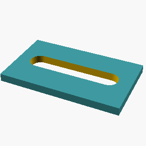
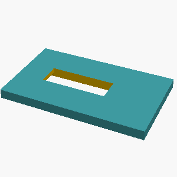
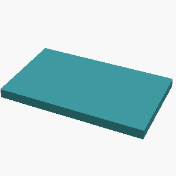
 {
// Base plate
cube([75,45,5]);
// Rounded slot
translate([ (75 - 46)/2, (45 - 12)/2, -1 ]) // Center slot and extend below to cut through
hull() {
translate([0,0,0]) cylinder(h=7, r=6);
translate([46,0,0]) cylinder(h=7, r=6);
}
}")
L2 · example 21 · mean 0.76 · max 0.76
A solid box 60mm x 30mm x 55mm with a rectangular notch 14mm wide and 7mm deep cut into the middle of its top face, running through the full depth of the box.

 {
cube([60,30,55]);
translate([23,11.5,0]) cube([14,7,55]);
}")
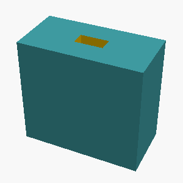
L3 · example 22 · mean 0.21 · max 0.41
A solid hexagonal prism 20mm tall, 40mm across the flats, with two flats parallel to the x axis, with a hemispherical dome of radius 7mm centered on its top face; and 4 holes of radius 2mm drilled vertically through it, evenly spaced on a circle of radius 13.1mm around the center, the first hole on the +X axis. The part sits on the z=0 plane, centered on the Z axis.

 {
// Calculate distance from center to vertex for hexagon
r = flat_to_flat / cos(30);
// Rotate by 90 degrees so two flats are parallel to x-axis
rotate(90)
cylinder(h=height, r=r, center=false);
}
flat_to_flat = 40;
height = 20;
dome_radius = 7;
hole_radius = 2;
hole_circle_radius = 13.1;
num_holes = 4;
difference() {
// Hexagonal prism
hex_prism(flat_to_flat, height);
// Four vertical holes evenly spaced on a circle, first at +X axis
for(i = [0:num_holes-1]) {
angle = i*360/num_holes;
x = hole_circle_radius * cos(angle);
y = hole_circle_radius * sin(angle);
translate([x, y, 0])
cylinder(h=height + dome_radius, r=hole_radius, center=false);
}
}
// Hem")
 {
// radius from center to vertex
r = flat_d / cos(30);
// hexagon with two flats parallel to x axis
linear_extrude(height)
polygon(points=[
[r*cos(0), r*sin(0)],
[r*cos(60), r*sin(60)],
[r*cos(120), r*sin(120)],
[r*cos(180), r*sin(180)],
[r*cos(240), r*sin(240)],
[r*cos(300), r*sin(300)],
]);
}
module dome(r=7) {
translate([0,0,r])
sphere(r);
}
difference() {
// base prism
hex_prism(40,20);
// holes
for (i = [0:3]) {
angle = i*360/4;
x = 13.1*cos(angle);
y = 13.1*sin(angle);
translate([x,y,0])
cylinder(h=25, r=2, center=false);
}
// subtract dome for clean un")
L5 · example 23 · mean 0.62 · max 0.69
Create a D-shaft: a 50mm-tall cylinder of radius 20mm whose +X side is sliced off by a vertical plane 13mm from the axis, leaving a flat running the full height.

 {
cylinder(h=50, r=20);
translate([13,0,0])
cube([20,40,51], center=false);
}")
 {
difference() {
cylinder(h=50, r=20);
translate([13,0,-1]) cube([40,40,52], center=false);
}
}
d_shaft();")
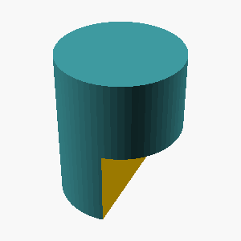
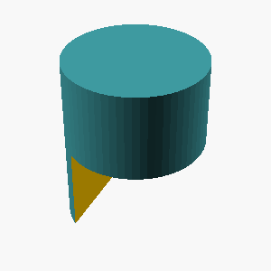
L1 · example 24 · mean 1.00 · max 1.00
A solid rectangular box 65mm wide, 50mm deep, and 20mm tall.

;")
L2 · example 25 · mean 0.70 · max 0.70
A solid box 30mm x 30mm x 30mm with a rectangular notch 10mm wide and 5mm deep cut into the middle of its top face, running through the full depth of the box.

 {
cube([30,30,30]);
translate([10, 12.5, 0])
cube([10, 5, 30]);
}")
 {
cube([30,30,30]);
translate([10,12.5,0])
cube([10,5,30]);
}")
 {
cube([30,30,30]);
translate([10, 12.5, 0]) cube([10,5,30]);
}")
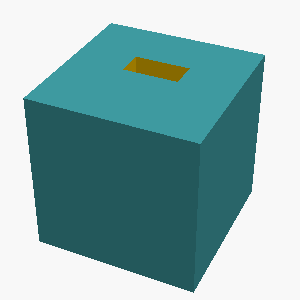
L5 · example 26 · mean 0.96 · max 1.00
Create a 65x45x15mm block with a centered vertical through-hole of radius 5mm, counterbored from the top face to radius 9mm over a depth of 9mm.

 {
// Main block
cube([65,45,15], center=false);
// Through-hole with counterbore
union() {
// Through hole
translate([65/2, 45/2, 0])
cylinder(h=15, r=5);
// Counterbore
translate([65/2, 45/2, 15 - 9])
cylinder(h=9, r=9);
}
}")
 {
// Main block
cube([65,45,15], center=false);
// Through hole with counterbore
union() {
// Counterbore hole
translate([65/2, 45/2, 15-9])
cylinder(h=9, r=9);
// Through hole
translate([65/2, 45/2, 0])
cylinder(h=15, r=5);
}
}")
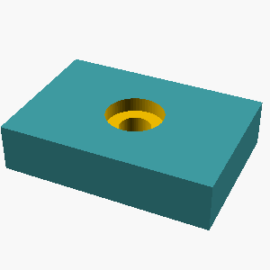
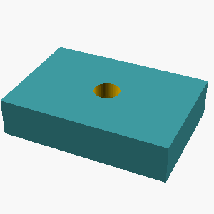
L4 · example 27 · mean 0.75 · max 1.00
A hexagonal prism (like a nut) 10mm tall, measuring 30mm across the flats, with a circular hole of radius 5mm drilled through its center along the axis.

 {
// Calculate circumradius R for hexagon given across flats A=30mm
// R = A / sqrt(3)
R = 30 / sqrt(3);
// Hexagon shape
prism_height = 10;
cylinder(h=prism_height, r=R, $fn=6);
}
difference() {
hex_nut();
translate([0,0,0]) cylinder(h=10+2, r=5, $fn=64);
}")
 {
// The distance across flats (D) is 30mm.
// For a regular hexagon, radius R = D / sqrt(3)
r = 30 / sqrt(3);
difference() {
// Hexagonal prism 10mm tall
cylinder(h=10, r=r, $fn=6);
// Circular hole of radius 5mm through center
translate([0,0,-1]) // slightly extend hole below and above for clean cut
cylinder(h=12, r=5);
}
}
hex_nut();")
 {
// Calculate the side length of the hexagon given the distance across flats
// Distance across flats = 2 * side length * cos(30°)
// side = distance_across_flats / (2 * cos(30°))
side = 30 / (2 * cos(30));
difference() {
// Hexagonal prism 10mm tall
cylinder(h=10, r=side, center=false, $fn=6);
// Hole of radius 5mm through the center
translate([0,0,-1]) cylinder(h=12, r=5, center=false);
}
}
hex_nut();")
L1 · example 28 · mean 1.00 · max 1.00
A solid rectangular box 40mm wide, 40mm deep, and 20mm tall.

;")
L5 · example 29 · mean 1.00 · max 1.00
A plus-sign-shaped prism 15mm tall: two rectangular bars, each 65mm long and 10mm wide, cross at right angles at their centers (one along X, one along Y), centered on the Z axis.

 {
cube([65,10,15], center=true);
cube([10,65,15], center=true);
}")
 {
// bar along X-axis
cube([65,10,15], center=true);
// bar along Y-axis
cube([10,65,15], center=true);
}")
 {
// Horizontal bar along X axis
translate([0, 0, 0])
cube([65, 10, 15], center=true);
// Vertical bar along Y axis
translate([0, 0, 0])
cube([10, 65, 15], center=true);
}")
 {
// Bar along X axis
translate([-65/2, -10/2, 0])
cube([65, 10, 15]);
// Bar along Y axis
translate([-10/2, -65/2, 0])
cube([10, 65, 15]);
}")